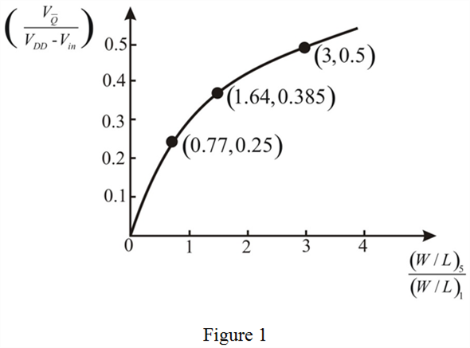

Step 1:
Refer to Figure 15.14 in the textbook for the graph between the normalized value of output,  versus the ratio of width to length ratios of transistors,
versus the ratio of width to length ratios of transistors,  .
.
The relation between the normalized value of output,  and the ratio of width to length ratios of transistors,
and the ratio of width to length ratios of transistors,  is,
is,

Simplify the equation to find the ratio of width to length ratios of transistors,  .
.
Apply square on both sides.
Impose the condition,  in the expression.
in the expression.
Step 2:
(a)
Consider that the supply voltage,  is 2.5 V, and the threshold voltage,
is 2.5 V, and the threshold voltage,  is 0.5 V.
is 0.5 V.
Substitute the values in the expression for the ratio of width to length ratios of transistors,  .
.
Thus, the ratio of width to length ratios of transistors,  , is .
, is .
Step 3:
(b)
Consider that the supply voltage,  is 1.8 V, and the threshold voltage,
is 1.8 V, and the threshold voltage,  is 0.5 V.
is 0.5 V.
Substitute the values in the expression for the ratio of width to length ratios of transistors,  .
.
Thus, the ratio of width to length ratios of transistors,  , is, .
, is, .
Step 4:
(c)
Consider that the supply voltage,  is 1.2 V, and the threshold voltage,
is 1.2 V, and the threshold voltage,  is 0.4 V.
is 0.4 V.
Substitute the values in the expression for the ratio of width to length ratios of transistors,  .
.
Thus, the ratio of width to length ratios of transistors,  ,
,  is, .
is, .
Step 5:
Locate the obtained values on the plot.
